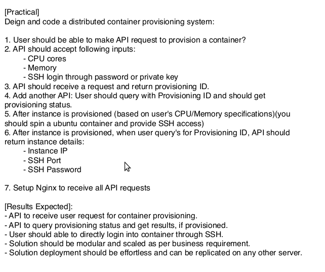

Greetings! corona time.. Huh!? what to do? just job or gaming in mobile? Nope…After the start of corona first 2 month I took a course from stephane maarek in udemy and by the last of second month I almost completed the course. I loved the course. After completing I was thinking what to do next and decided to take interviews to make use of this year. By the way ..What you did? Nothing planned yet? You have to.
No more questions. As said I went through 4-5 interviews among which I got selected in 3 for DevOps. And I rejected all 3 due to some freedom concepts and most likely I didn’t want to switch to one.
“FREE AS IN FREEDOM” yes you heard it! I first heard this phrase from my friend PRINZ PUIZ. He looks similar to a mice but works as a django developer and is an open minded guy. I studied a lot from him both in IT and LIFE. I learned most of my stuffs from my BTech friends someway or the other and not much from books. Now I am a bit into this phrase. Not going more into offtopics… OKAY! focusing on the title.
Among the interviews I attended the most challenging one that hit me was for the post of systems engineer in Qblocks. Let me share the question they gave me.

First view, I was a bit afraid by the length of the question. But when they said deadline is 24 hours. I got my confidence back. As a devops engineer I am never into systems engineer position. But I do had the confidence that whatever question, anyone give me in IT I could do it from scratch. My plus was that I knew python and devops very well.
I started planning the architecture and decided to do this in flask. I never made an API before but I knew that flask maps requests and funtions. I was familiar with flask so never thought of django. You can do this in django too.
So here is what I did in code:
import flask
import docker
import os
from flask import request, session
import random
import time
link = flask.Flask(__name__)
link.config["DEBUG"] = True
link.secret_key="JiNO"
@link.route('/', methods=['GET'])
def home():
return "Dusting off some old talents!!"
@link.route('/api/', methods=['GET'])
def api():
return "Welcome to API"
provid=random.randint(500, 50000)
@link.route('/api/provisionID', methods=['GET'])
def prov():
if 'cpu' in request.args and 'mem' in request.args:
cp=request.args.get('cpu')
mem=request.args.get('mem')
print ("Input received!")
id_no=str(provid)
session["id_no"]=id_no
session["cp"]=cp
session["mem"]=mem
return (id_no)
else:
return ("To provision a container CPU and MEMORY data is neccessary. You can Include this is same URL.\n For example: http://127.0.0.1:5000/api/provisionID?cpu=1&mem=300m")
@link.route('/api/container', methods=['GET'])
def jin():
if "id_no" in session:
prov_id =session["id_no"]
if request.args.get('prID')==prov_id:
if "cp" in session:
cpu=session["cp"]
if "mem" in session:
mem=session["mem"]
client = docker.from_env()
p=client.containers.run("ssh_ubuntu", stdin_open = True, tty = True, detach=True, entrypoint='/bin/bash', cpu_count=int(cpu), mem_limit=mem, privileged=True, ports={'22/tcp': ('127.0.0.1', 9876)})
j=str(p).split( )
q=j[1][:-1]
print (q)
container = client.containers.get(str(q))
e=vars( container )["attrs"]["NetworkSettings"]["Networks"]["bridge"]["IPAddress"]
print ("IP address assigned:"+e)
os.system('sudo docker exec -it '+str(q)+' /bin/bash -c "service ssh start; apt-get install sshpass"')
if 'pass' not in request.args:
return ("no pass provided to login via ssh")
else:
os.system('sshpass -p '+str(request.args.get('pass'))+' ssh -o StrictHostKeyChecking=no '+request.args.get('USER')+'@'+e+' -C "exit"')
return ("successfully logged in using ssh with pass:"+request.args.get('pass')+", assigned IP "+str(e)+" port 22"+", Container ID: "+str(q))
return "Docker Container provisioned and tested SSH access"
else:
return "mem session went wrong"
else:
return "cpu not found in session"
else:
return "Error: comapared provision ID and is not same"
else:
return "Id_no part gone wrong"
link.run()
Yeah I know code looks a bit weird! Since It was just a interview I didn’t focus on security level much. But I do complete this before time. I think I took 5 hours continuous to understand docker library and another 2 hrs to build the whole code. Also I created a dockerfile for that ssh container.
Interviewer was pretty much okay with my code but was not happy. He asked me some more questions in-depth which I didn’t answer properly. The interviewer was good with my learning character and offered me the job. Ofcourse salary was more than I expected.
I searched a lot and after that I understood its not in my code which made the interviewer unhappy but the questions he asked. He asked me questions regarding computing and its types and I knew only distrubuted and parallel. Hmmm…Now I know this very well.
Let me conclude, If you are looking for a systems engineer job you should learn ofcourse, yes! one programming language, architecture of systems and devops tools are a plus.
Thanks for reading! see you in next blog.